Week8
Unsupervised Learning : Introduction
Clustering
learn from unlabeled data - pretty exciting
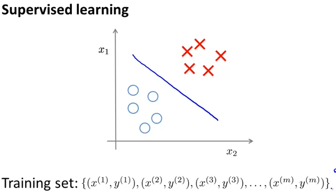
clustering
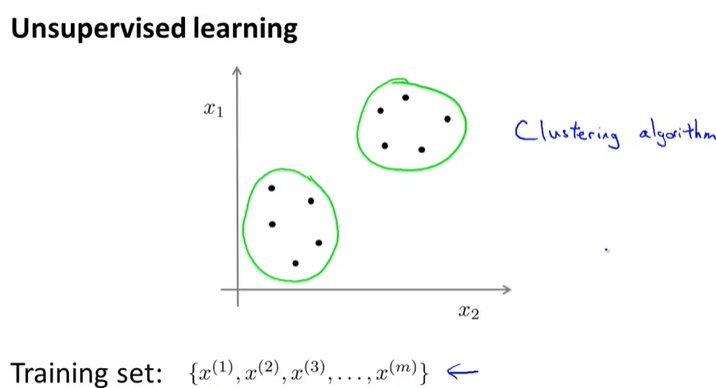
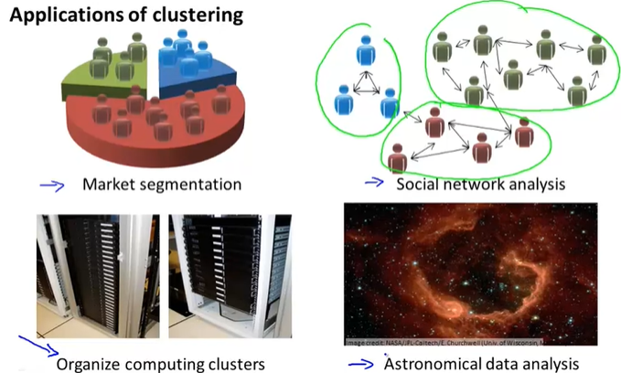
K means algorithm
If I run the K Means clustering algorithm, here is what
I'm going to do. The first step is to randomly initialize two points, called the cluster centroids.
So, these two crosses here, these are called the Cluster Centroidsand I have two of them
because I want to group my data into two clusters.
K Means is an iterative algorithm and it does two things.
First is a cluster assignment step, and second is a move centroid step. So, let me tell you what those things mean.
The first of the two steps in the loop of K means, is this cluster assignment step.
What that means is that, it's going through each of the examples, each of these green dots shown here and depending on whether it's closer to the red cluster centroid or the blue cluster centroid, it is going to assign each of the data points to one of the two cluster centroids.
Specifically, what I mean by that, is to go through your data set and color each of the points either red or blue, depending on whether it is closer to the red cluster centroid or the blue cluster centroid, and I've done that in this diagram here.

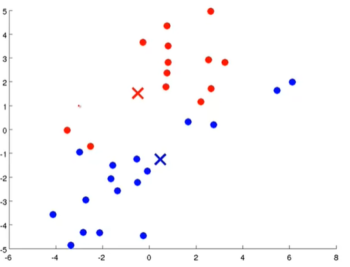
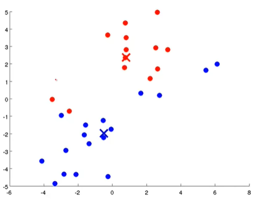
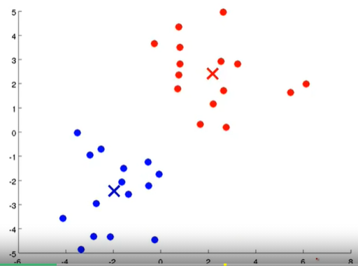
if you keep running additional iterations of K means from here the cluster centroids will not change any further and the colours of the points will not change any further. And so, this is the, at this point, K means has converged and it's done a pretty good job findingthe two clusters in this data
if you keep running additional iterations of K means from here the cluster centroids will not change any further and the colours of the points will not change any further. And so, this is the, at this point, K means has converged and it's done a pretty good job findingthe two clusters in this data
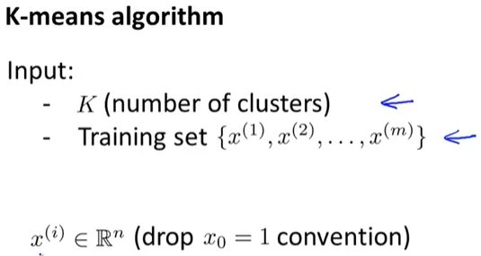
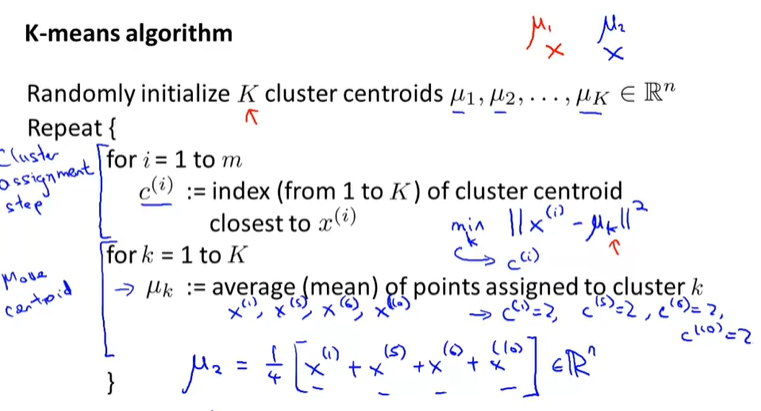
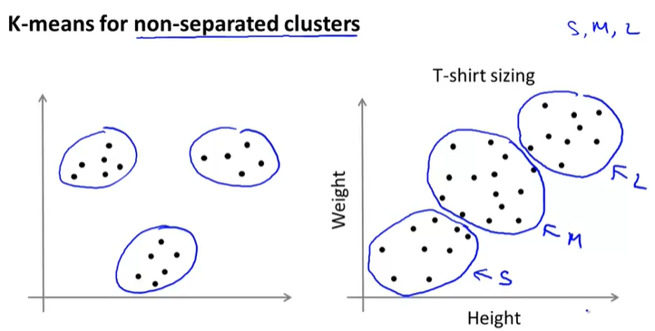
Optimization techniques
K-means optimization objective
K - total no of clusters
k = {1,2,3,....K}
The cost function that k-means is minimizing is a function J of all of these parameters, c1 through cm and mu 1 through mu K. That k-means is varying as the algorithm runs. And the optimization objective is shown to the right, is the average of 1 over m of sum from i equals 1 through m of this term here.
Trying to find c and mu to try to minimize this cost function J. This cost function is sometimes also called the distortion cost function, or the distortion of the k-means algorithm.
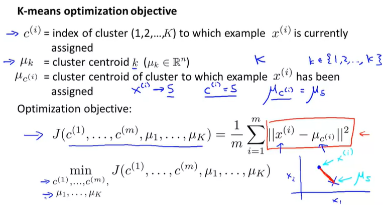
Cluster assignment step - assign each point to the closest centroid
the cluster assignment step does is it doesn't change the cluster centroids, but what it's doing is this is exactly picking the values of c1, c2, up to cm. That minimizes the cost function, or the distortion function J.
The second step : K means was the move centroid step.
taking the two sets of variables and partitioning them into two halves right here. First the c sets of variables and then you have the mu sets of variables. And what it does is it first minimizes J with respect to the variable c and then it minimizes J with respect to the variables mu and then it keeps on.
We can use that to debug k-means and help make sure that k-means is converging and is running properly.
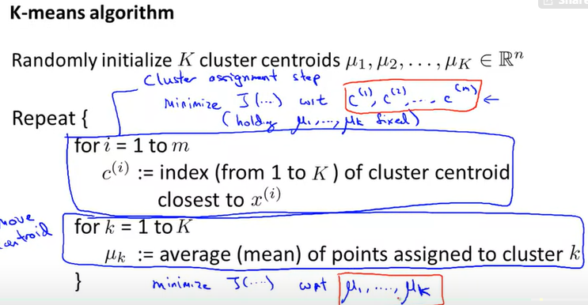
Random Initialization
how to make K-means avoid local optima as well.
m-training examples

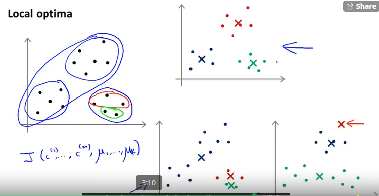
instead of just initializing K-means once and hopping that that works, what we can do is, initialize K-means lots of times and run K-means lots of times, and use that to try to make sure we get as good a solution, as good a local or global optima as possible.
You will have a hundred different ways of clustering the data and then finally what you do is all of these hundred ways you have found of clustering the data, just pick one, that gives us the lowest cost.
That gives us the lowest distortion. And it turns out that if you are running K-means with a fairly small number of clusters , so you know if the number of clusters is anywhere from two up to maybe 10 - then doing multiple random initializations can often, can sometimes make sure that you find a better local optima. Make sure you find the better clustering data. But if K is very large, so, if K is much greater than 10, certain if K were, you know, if you were trying to find hundreds of clusters, then,having multiple random initializations is less likely to make a huge difference and there is a much higher chance that your first random initialization will give you a pretty decent solution already
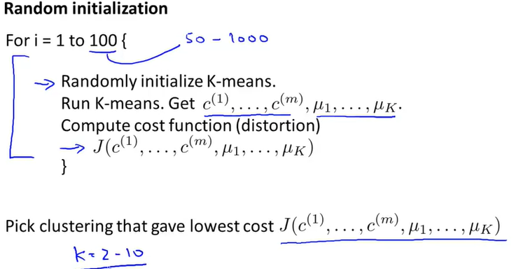
Choosing the number of clusters
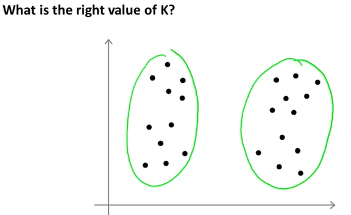
the Elbow Method, what we're going to do is vary K, which is the total number of clusters. So, we're going to run K-means with one cluster, that means really, everything gets grouped into a single cluster and compute the cost function or compute the distortion J and plot that here. And then we're going to run K means with two clusters, maybe with multiple random initial agents, maybe not. But then, you know, with two clusters we should get, hopefully, a smaller distortion, and so plot that there.
And then run K-means with three clusters, hopefully, you get even smaller distortion and plot that there.
I'm gonna run K-means with four, five and so on.
if you actually do this in a practice, you know, if your plot looks like the one on the left and that's great.
It gives you a clear answer, but just as often, you end up with a plot that looks like the one on the right and is not clear where the ready location of the elbow is. It makes it harder to choose a number of clusters using this method. So maybe the quick summary of the Elbow Method is that is worth the shot but I wouldn't necessarily,you know, have a very high expectation of it working for any particular problem.
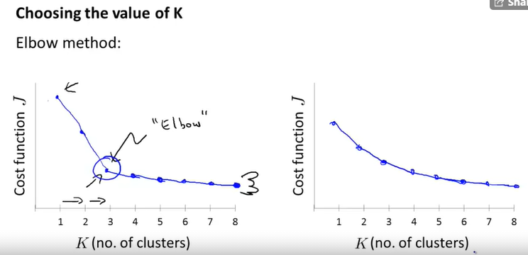
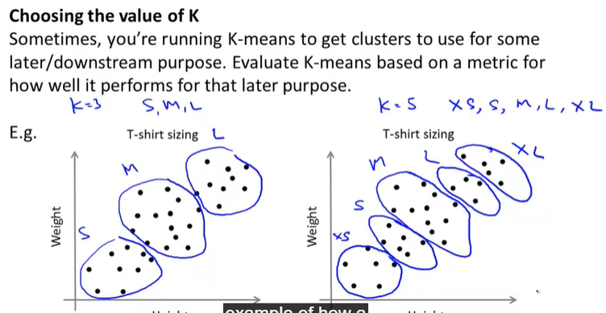
Motivation 1 : Data compression
Dementionality reduction
second type of unsupervised learning problem called dimensionality reduction.
data compression not only allows us to compress the data and have it therefore use up less computer memory or disk space, but it will also allow us to speed up our learning algorithms
if the length in centimeters were rounded off to the nearest centimeter and lengthened inches was rounded off to the nearest inch. Then, that's why these examples
don't lie perfectly on a straight line, because of, you know, round-off error to the nearest centimeter or the nearest inch.
And if we can reduce the data to one dimension instead of two dimensions, that reduces the redundancy.
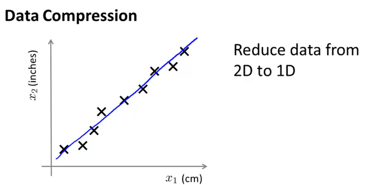
if you highly correlated features, maybe you really want to reduce the dimension
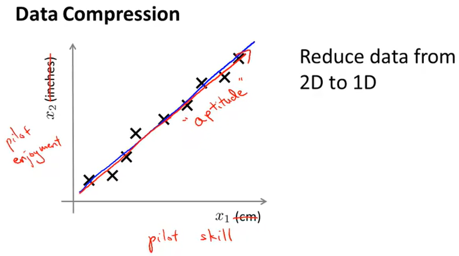
this is an approximation to the original training self because I have projected all of my training examples onto a line
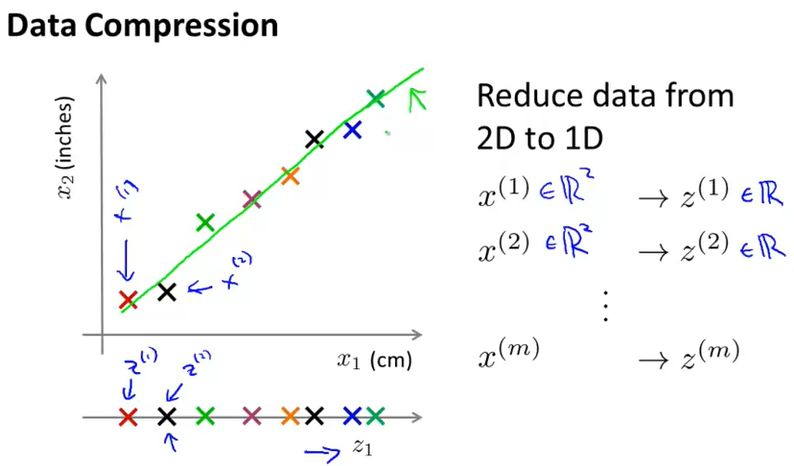
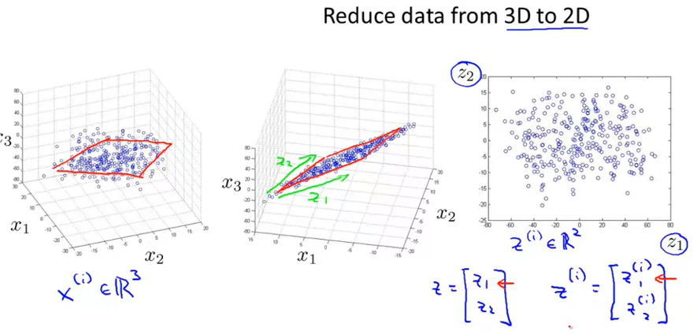
Motivation II : Data Visualization
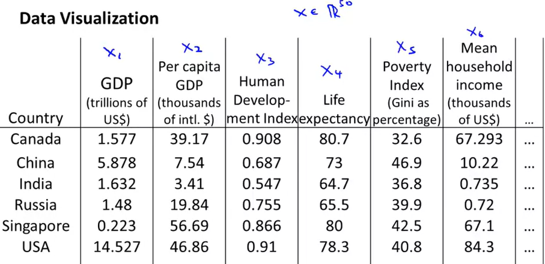
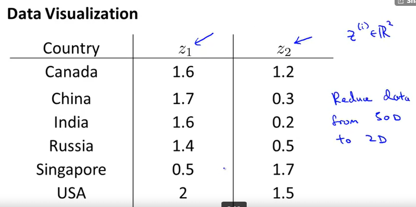
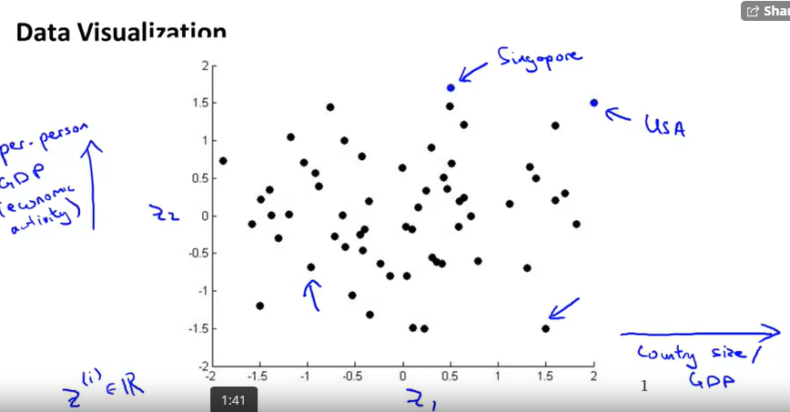
Principal Component Analysis Problem Formulation
PCA
For the problem of dimensionality reduction, by far the most popular, by far the most commonly used algorithm is something called
principle components analysis, or PCA
The length of those blue line segments, that's sometimes also called the projection error.
And so what PCA does is it tries to find a surface onto which to project the data so as to minimize that.
it's standard practice to first perform mean normalization at feature scaling so that the features x1 and
x2 should have zero mean, and should have comparable ranges of values.
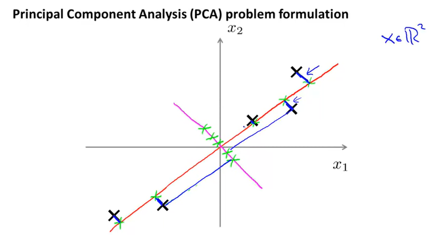
where the PCA gives me u(1) or -u(1), doesn't matter. positive vector or negative vector
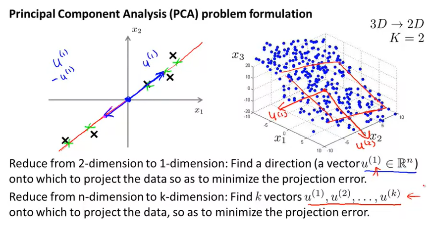
if you're not familiar with linear algebra, just think of it as
finding k directions instead of just one direction onto which to project the data.
So finding a k-dimensional surface is really finding a 2D plane in this case,
shown in this figure,
where we can define the position of the points in a plane using k directions.
And that's why for PCA we want to find k vectors onto which to project the data.
And so more formally in PCA, what we want to do is find this way to project the data
so as to minimize the sort of projection distance,
which is the distance between the points and the projections.
And so in this 3D example too.
Given a point we would take the point and project it onto this 2D surface.
We are done with that.
And so the projection error would be, the distance between the point and
where it gets projected down to my 2D surface.
And so what PCA does is I try to find the line, or a plane, or whatever,
onto which to project the data, to try to minimize that square projection,
that 90 degree or that orthogonal projection error.
If we were doing linear regression, what we would do would be, on the left we would
be trying to predict the value of some variable y given some info features x.
And so linear regression, what we're doing is we're fitting a straight line so
as to minimize the square error between point and this straight line.
And so what we're minimizing would be the squared magnitude of these blue lines.
And notice that I'm drawing these blue lines vertically.
That these blue lines are the vertical distance between the point and
the value predicted by the hypothesis.
Whereas in contrast, in PCA, what it does is it tries to minimize
the magnitude of these blue lines, which are drawn at an angle.
These are really the shortest orthogonal distances.
The shortest distance between the point x and this red line.
there is no special variable y in PCA, every x1,x2, are treated the same
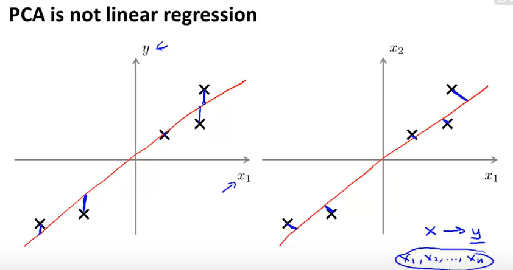
if I have three-dimensional data and
I want to reduce data from 3D to 2D, so maybe I wanna find two directions,
u(1) and u(2), onto which to project my data.
Then what I have is I have three features, x1, x2, x3, and
all of these are treated alike.
All of these are treated symmetrically and
there's no special variable y that I'm trying to predict.
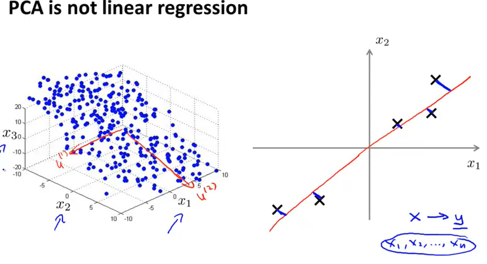
Principal Component Analysis algorithms
Before applying PCA, there is a data pre-processing step which you should always do.
Given the trading sets of the examples is important to always perform mean normalization,
and then depending on your data, maybe perform feature scaling as well.
this is very similar to the mean normalization and feature scaling
process that we have for supervised learning.
In fact it's exactly the same procedure except that we're doing it now to our unlabeleddata, X1 through Xm.
So for mean normalization we first compute the mean of each feature and then
we replace each feature, X, with X minus its mean, and so this makes each feature now have exactly zero mean.
Similar to what we had with supervised learning, we would take x, i substitute j, that's the j feature
and so we would subtract of the mean, now that's what we have on top, and then divide by sj.
Here, sj is some measure of the beta values of feature j. So, it could be the max minus min value, or more commonly,
it is the standard deviation of feature j. Having done this sort of data pre-processing, here's what the PCA algorithm does.
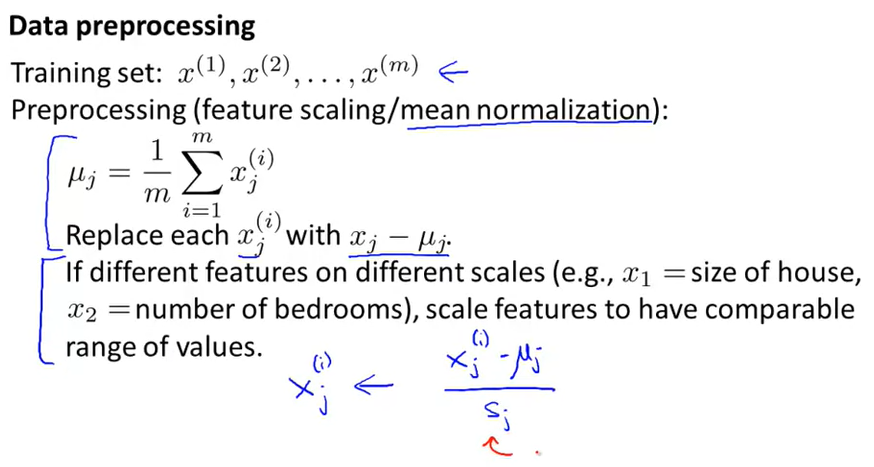
compute the vectors u(i) and compute the z values
https://www.youtube.com/watch?v=FgakZw6K1QQ StatQuest on PCA
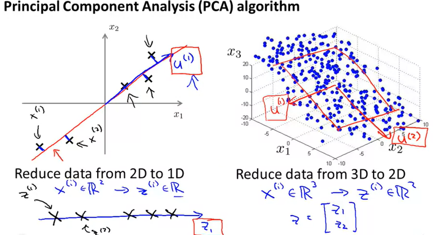
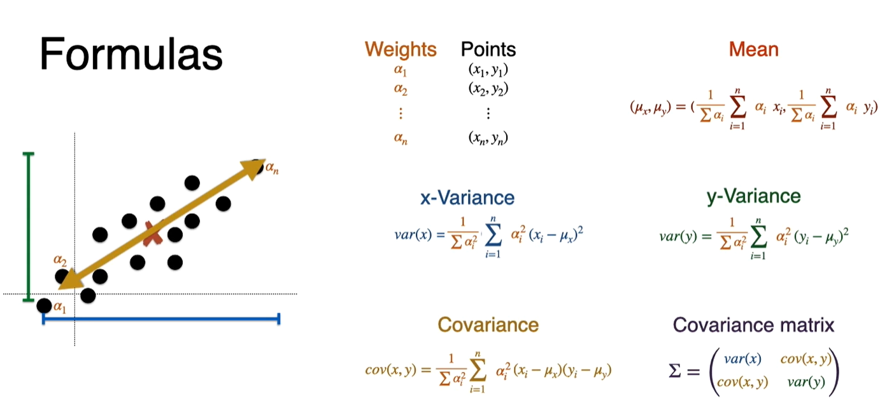
It turns out that the SVD function and the I function it will give
you the same vectors, although SVD is a little more numerically stable.
So I tend to use SVD, although I have a few friends that use the I function to do this as wellbut when you apply this to a covariance matrix
sigma it gives you the same thing.
This is because the covariance matrix always satisfies a mathematical Property called symmetric positive definite
You really don't need to know what that means, but the SVDand I-functions are different functions but when they are applied to a
covariance matrix which can be proved to always satisfy this mathematical property; they'll always give you the same thing.
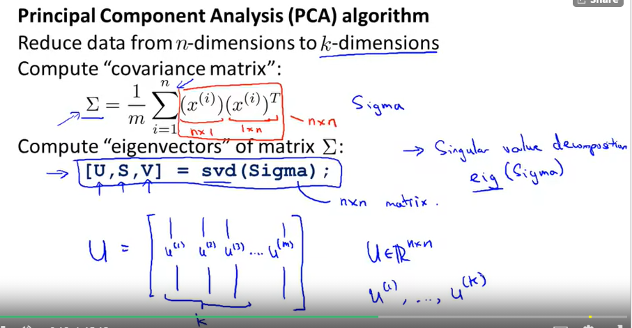
from the SVD numerical linear algebra routine we get these matrices u, s,
and d. we're going to use the first K columns of this matrix to get u1-uK.
Now the other thing we need to is take my original data set, X which is an RN And find a lower dimensional representation Z, which is a R K for this data.
So the way we're going to do that is take the first K Columns of the U matrix.
Construct this matrix.
Stack up U1, U2 andso on up to U K in columns.
It's really basically taking, you know, this part of the matrix, the first K columns of this matrix.
And so this is going to be an N by K matrix.
I'm going to give this matrix a name.
I'm going to call this matrix U, subscript "reduce," sort of a reduced version of the U matrix maybe.
I'm going to use it to reduce the dimension of my data.
And the way I'm going to compute Z is going to let Z be equal to this U reduce matrix transpose times X. Or alternatively, you know,
to write down what this transpose means. When I take this transpose of this U matrix, what I'm going to end up with is these vectors now in rows. I have U1 transpose down to UK transpose.
Then take that times X, and that's how I get my vector Z
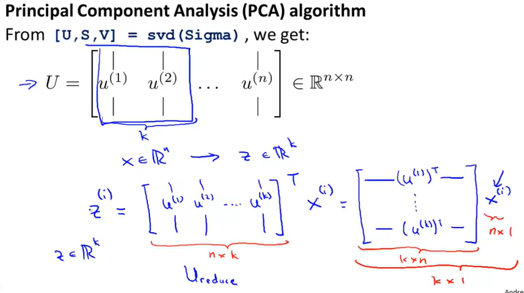
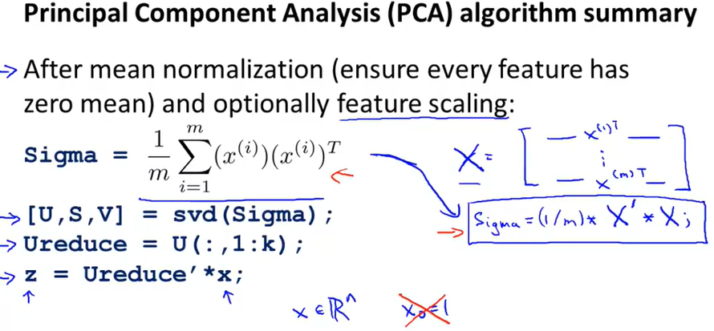
Applying PCA
Reconstruction from compressed Representation
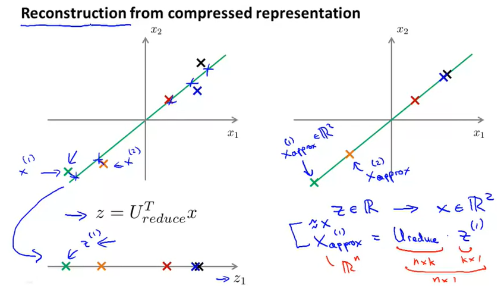
Choosing the number of principal components
In the PCA algorithm we take N dimensional features and reduce them to some K dimensional feature representation.
This number K is a parameter of the PCA algorithm.
This number K is also called the number of principle components or the number of principle components that we've retained.
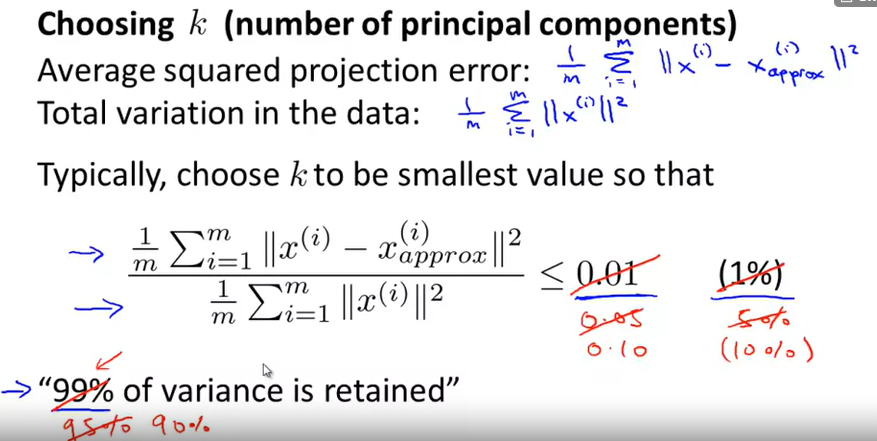
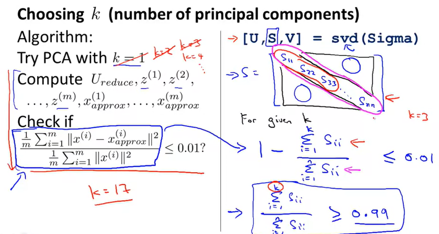
And by the way, even if you were to pick some different value of K, even if you were to pick the value of K
manually, you know maybe you have a thousand dimensional data and I just want to choose K equals one hundred.
Then, if you want to explain to others what you just did, a good way to explain the performance
of your implementation of PCA to them, is actually to take this quantity and compute what this is, and that will tell you what was the percentage of variance retained.
And if you report that number, then, you know, people that are familiar with PCA, and people can use this to get a good understanding of how well your hundred dimensional representation is approximating your original data set, because there's 99% of variance retained.
That's really a measure of your square of construction error, that ratio being 0.01, just gives people a good intuitive
sense of whether your implementation of PCA is finding a good approximation of your original data set.
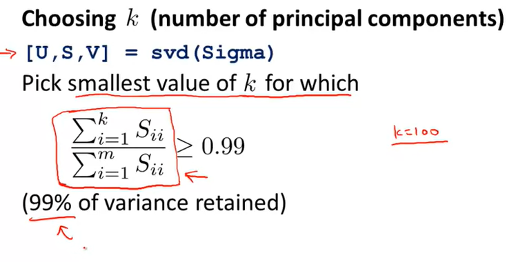
Advice for applying PCA
Here's how you can use PCA to speed up a learning algorithm, and this supervised learning algorithm speed up is actually the most common use that I personally make of PCA
One final note, what PCA does is it defines a mapping from x to z and this mapping from x to z should be defined by running
PCA only on the training sets. And in particular, this mapping that
PCA is learning, right, this mapping, what that does is it computes the set of parameters.
That's the feature scaling and mean normalization. And there's also computing this matrix U reduced. But all of these things that U reduce, that's like a parameter that is learned by PCA and we should be fitting our parameters only to our training sets and not to our cross validation or test sets and so these things the U reduced
so on, that should be obtained by running PCA only on your training set.
And then having found U reduced, or having found the parameters for feature scaling where the mean normalization
and scaling the scale that you divide the features by to get them on to comparable scales.
Having found all those parameters on the training set, you can then apply the same mapping to other examples that may be
In your cross-validation sets or in your test sets.
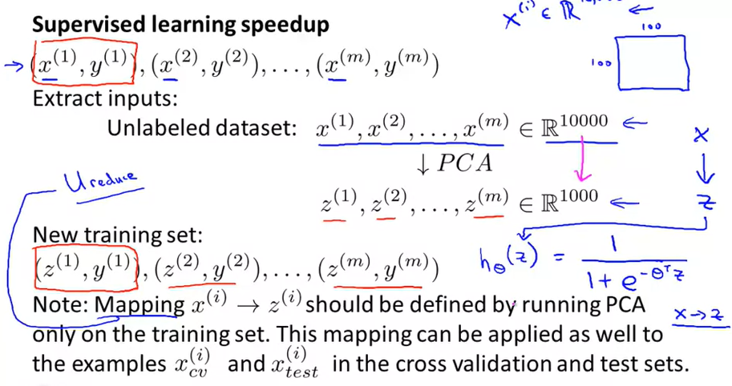
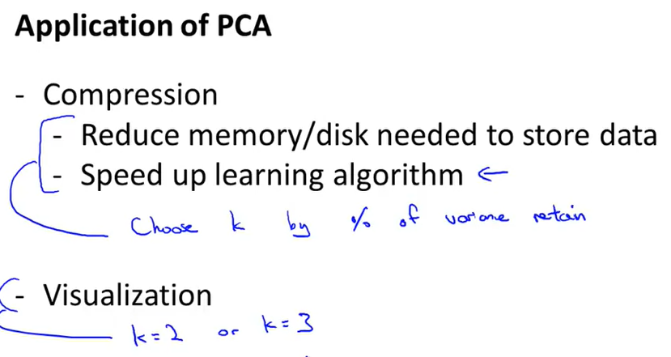
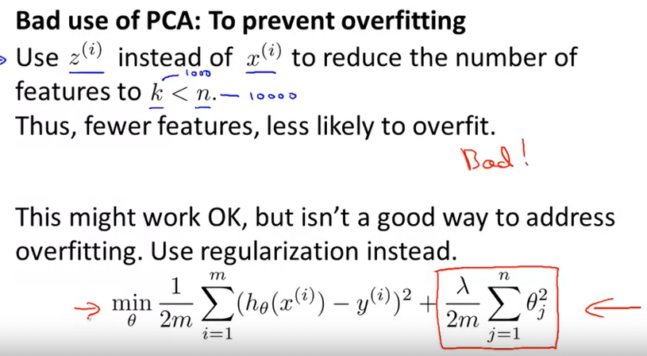
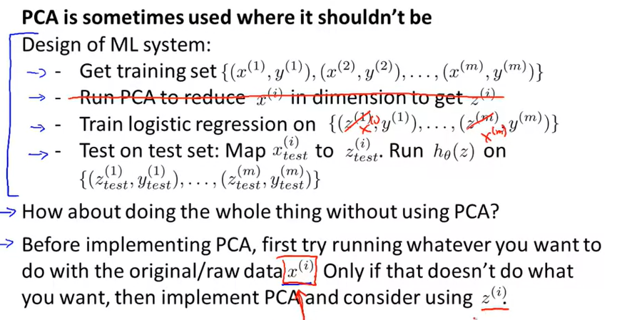